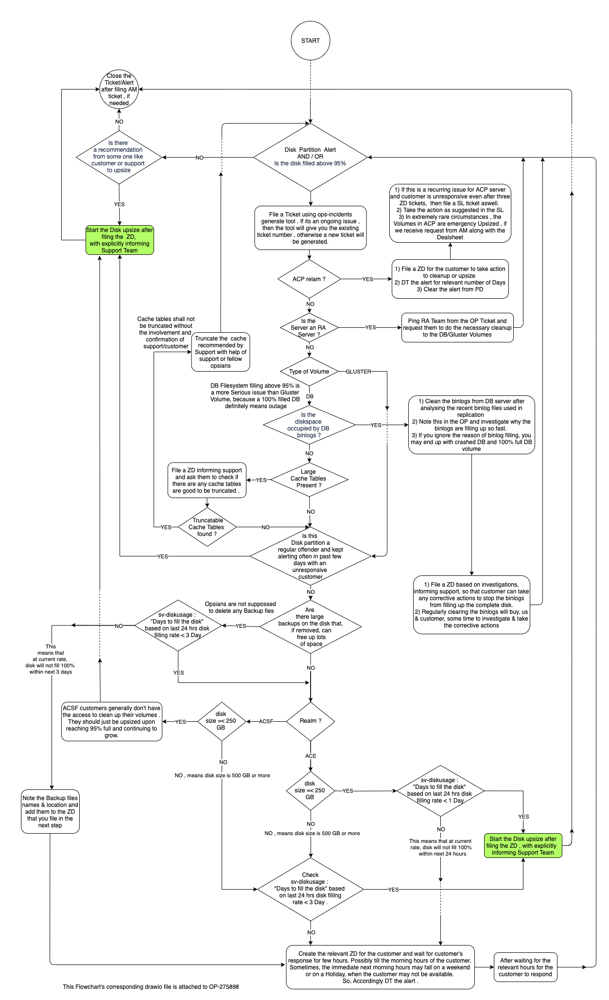

Resize volumes
EBS volumes can be resized to any of the supported sizes , provided the data fits. The supported sizes are a business restriction, not a technical restriction.
Volumes must be either magnetic or SSD except for backup volume. Backup volume type should be magnetic for ACE/ACP customers and SSD for ACSF (EG1/WMG/TREX). Below table lists the recommended storage type for volumes:
| Volume | Storage type |
|--------------|------------------------------------------------------------|
| Database | SSD (gp3) |
| Filesystem | SSD (gp3) |
| Database | SSD (gp2) |
| Filesystem | SSD (gp2) |
| Backup | Magnetic (standard for ACE/ACP) . |
| Backup | SSD (gp3 for ACSF) |
Note While upsizing existing volumes, keep the same storage type as existing unless it is specified to change the storage type in the ticket.
Note This runbook is also applicable for ACP volume resizes now.
The sizes of ephemeral volumes ('/dev/xvda' and '/dev/xvdb') are tied to the
ami_type and can not be changed.
Only mntfs volumes can be resized directly, see Mntfs (xvbd). For all other purpose EBS volumes (FS,DB), we create new EBS volumes, copy the data, and exchange the volumes. Creating the volumes and copying the data is done in two phases with a prep phase and a maintenance window phase. Copying the data is typically done with the XFS tools for Gluster bricks and rsync for MySQL volumes. Exchanging the volumes requires a maintenance window. During this window, services are stopped and an incremental copy is made before volumes are exchanged.
Note: In fields, volume devices are referred to as '/dev/sda', etc, even if
the devices are really '/dev/xvda' on the server itself. This is because of
the device handler used by the kernel on the instance. sd = SCSI Disk driver
and xvd = Xen Virtualisation Disk driver. man sd for some extra low level
info.
Note: SSD's are supported for database volumes but cost extra so existing volumes should be resized to the same type unless specifically requested and approved.
Note: All magnetic (standard) volumes will have a size of less than 38 Gb or greater than 125 Gb. Most of them 125Gb. Note this is the size of the volume not the partition.
Emergency upsize guidelines (ACE & ACSF only)
-
Start emergency upsizing the volumes (DB/FS) if the volume filling rate has been high or reached 100% and customer/support isn't able to clear any data.
-
Proceed with emergency upsize if customer has been non-responsive over 3 or more crits to clear the data.
-
Proceed for an emergency conversion to gp3 if IOPs usage is very high and disk usage is less. If IOPs and usage both are high and creating DB replication lag then proceed with emergency upsize to gp2 or gp3.
-
For ACP - we don't perform emergency upsize. File an SL ticket if customer is unresponsive over 3 crits or more and get confirmation for removing them from monitoring.
-
File an AM ticket after upsize from the ops portal
-
If the upsize is running over your shift, please include handoff notes mentioning all what has been done and what is left to make it easy for the next engineer to pick it up.
We can refer this Flowchart to decide on whether to do an Emergency Upsize or some other step to deal with a Disk Partition Alert :
Scope of Flowchart : Gluster and DB file system Volumes of ACE , ACSF and ACP

Gluster Prep Dumps
It is possible that doing multiple gluster dumps at once (rsync or xfsdump) will cause an outage. You can create and mount the new volumes in parallel, but unless you are very sure that there is enough CPU, memory, and i/o bandwidth available to do two gluster dumps at once, you should do one at a time.
Preparatory steps
To be completed before the maintenance window opens. If downsizing, make sure the space currently used is less than 95% of the new volume size.
SERVER=
SIZE=
JIRA_TICKET=
Create and attach the new volume
-
Gather volume volume information and put it in the ticket.
sv-vollist ${SERVER} -
Get the volume id
The volume id is the number after id: in the output of sv-vollist. It does not start with vol-.
VOLUME_ID= VOLUME_TYPE=(gp3 gp2 or standard) -
If you need to start at a specific time, calculate the UNIX_START_TIME variable:
UNIX_START_TIME=$(date -d '2018/03/22 20:00 UTC' +"%s")add the following flag to your ah-volume resize command:
--scheduled-time ${UNIX_START_TIME} -
If you want to resume a workflow task at a specific time, calculate UNIX_START_TIME as above, then schedule it to resume (you must do this after starting the workflow with
ah-volume resizebelow):WORKFLOW_ID= ah-workflow schedule-resume ${WORKFLOW_ID} \ --scheduled-time ${UNIX_START_TIME}WARNING: This is not safe for HA pairs since there is no mechanism in place to ensure clean failover.
-
To Find/Check scheduled maintenance information and status, run
scheduled_task=$(ah-workflow get ${WORKFLOW_ID} | grep -w "scheduled_task_ids.0"|cut -d: -f2) wf-scheduled or ah-scheduled-task get $scheduled_task -
To Cancel/Remove the scheduled task in case if your maintenance will be cancelled, Run
ah-scheduled-task kill $scheduled_task
Beware: Always check the last hrs update in your maintenance ticket for cancellation updates if any.
-
Add a runbook entry.
VOLUME=[mysql|gfs|backup] fssh $SERVER "sudo ah-runbook \ '${JIRA_TICKET} - ${USER} - ${VOLUME} to ${SIZE}'" -
Adding encryption to volumes:
Encryption is required add
--set-encryptionto the resize command.Encryption is only supported for the following ami_types
Type Instance type sizes c4 c4.large c4.xlarge c4.2xlarge c4.4xlarge c4.8xlarge c4.16xlarge c5 c5.large c5.xlarge c5.2xlarge c5.4xlarge c5.9xlarge c5.18xlarge cr1 cr1.8xlarge d2 d2.xlarge d2.2xlarge d2.4xlarge d2.8xlarge g2 g2.2xlarge g2.8xlarge m4 m4.large m4.xlarge m4.2xlarge m4.4xlarge m4.10xlarge m4.16xlarge m5 m5.large m5.xlarge m5.2xlarge m5.4xlarge m5.12xlarge m5.24xlarge r4 r4.large r4.xlarge r4.2xlarge r4.4xlarge r4.8xlarge r4.16xlarge t2 t2.large List based on Aq Gem Instance Features aq/aws_helpers/ec2/instance_features.rb
Copy data: rsync method
Important Note
Do not abort workflows!
- If you are unable to resolve a problem with a workflow, raise the incident to Ops Management for approval to escalate it to Cloud through Ops Portal:
- Use this list of components to identify which Cloud team to assign it to:
Note: Unless the customer wants their FS (gluster) volumes to be a 'standard' volume type, the gluster bricks must always be set to SSD i.e. 'gp3' or 'gp2'. Be sure to check the ticket description.
Note: Please do not purge binlogs during DB volume upsize even if the site is down. Purging binlogs during a DB volume upsize might corrupt that DB upon finishing.
All volumes must be encrypted by default now. Please ensure that instance type supports encrypted ebs volumes before starting the workflow.
Disclaimer
Before initiating a rsync workflow for db cluster, make sure to check if the following condition is met:
New volume size > (Current_Disk_Size + Biggest_File_on_the_Current_Disk/particularly ibdata1 file)
If the above condition doesn't met or if the size of a particular file like ibdata1 file is huge, then we should use 'xfsdump' method to upsize the volume. However if you face any issue with 'xfsdump' method then escalate the issue to DBA.
NOTE: After resizing the volume on each server, make sure to remount Gluster server. This is a mandatory step and applicable to FS volumes only.
Typically used for MySQL, but also works with Gluster bricks.
ah-volume resize ${VOLUME_ID} --new-size ${SIZE} --method rsync \
--pause-at-step disable_backups --set-encryption \
--pause-description "${JIRA_TICKET} - ${USER}" \
--send-notifications false
Note: In order to receive workflow failure notifications --send-notications false flag can be avoided.
If this is a scheduled workflow with no pause and add encryption, on one of supported instance types listed on the table above, use:
NOTE: After resizing the volume on each server, make sure to remount Gluster server. This is a mandatory step and applicable to FS volumes only.
ah-volume resize ${VOLUME_ID} --new-size ${SIZE} --method rsync \
--set-encryption --scheduled-time ${UNIX_START_TIME} \
--send-notifications false
Ops can use below command for MySQL volumes resize only for DEDs/FSDBs/DBMASTERs
PRIMARY_DB_SERVER=
ah-db-cluster resize-storage $PRIMARY_DB_SERVER --new-size ${SIZE} --method rsync \
--set-encryption --scheduled-time ${UNIX_START_TIME} \
--send-notifications false
Note: In order to receive workflow failure notifications --send-notications false flag can be avoided.
Copy data: XFS dump-restore method
Important Note
Do not abort workflows!
- If you are unable to resolve a problem with a workflow, raise the incident to Ops Management for approval to escalate it to Cloud through Ops Portal:
- Use this list of components to identify which Cloud team to assign it to:
Note: Unless the customer wants their FS (gluster) volumes to be a 'standard' volume type, the gluster bricks must always be set to SSD i.e. 'gp3' or 'gp2'. Be sure to check the ticket description.
This also works for MySQL volumes. For gluster xfsdumps: If this is the second server you are doing an xfsdump on, make sure the first one is finished, or there is more than enough I/O bandwidth to spare. Two gluster dumps at once can cause an outage.
Note: Please do not purge binlogs during DB volume upsize even if the site is down. Purging binlogs during a DB volume upsize might corrupt that DB upon finishing.
All volumes must be encrypted by default now. Please ensure that instance type supports encrypted ebs volumes before starting the workflow.
- For GlusterFS bricks set the type to
gp3:
NOTE: After resizing the volume on each server, make sure to remount Gluster server. This is a mandatory step and applicable to FS volumes only.
ah-volume resize ${VOLUME_ID} --new-size ${SIZE} --method xfsdump \
--ebs-volume-type ${VOLUME_TYPE} \
--set-encryption \
--pause-at-step disable_backups \
--pause-description "${JIRA_TICKET} - ${USER}" \
--send-notifications false
- For other volumes:
NOTE: After resizing the volume on each server, make sure to remount Gluster server. This is a mandatory step and applicable to FS volumes only.
ah-volume resize ${VOLUME_ID} --new-size ${SIZE} --method xfsdump \
--set-encryption \
--pause-at-step disable_backups \
--pause-description "${JIRA_TICKET} - ${USER}" \
--send-notifications false
Note: In order to receive workflow failure notifications --send-notications false flag can be avoided.
Note: There is a bug due to
which a workflow fails if the volume has been upsized previously using xfsdump.
In that case, please remove xfsrestorehousekeepingdir and orphanage directories
from /mnt/gfs before starting the workflow. Also, check if /mnt/brickXXXX has these
directories and cleanup them if they exist from there too.
No data copy: no_data_migration method
Warning: this method will create empty volumes discarding any existing data. It is usefull for backup volumes where we don't need to wait for data copy. It should NEVER be used on gfs or mysql volumes!
If this is a scheduled workflow with no pause and add encryption on supported instances use:
ah-volume resize ${VOLUME_ID} --new-size ${SIZE} --method no_data_migration \
--set-encryption --scheduled-time ${UNIX_START_TIME} \
--send-notifications false
Note: In order to receive workflow failure notifications --send-notications false flag can be avoided. Also keep in mind, backup volume type should be magnetic for ACE/ACP customers and SSD for ACSF (EG1/WMG/TREX).
Gp2 to Gp3 conversion
If IOPs usage is very high and disk usage is less for FS or DB volume or DB replication is very high due to high IOPs then procced with conversion from standard or gp2 to gp3 using a worklfow.
ah-volume resize ${VOLUME_ID} --new-size ${SIZE} --method xfsdump \
--ebs-volume-type ${VOLUME_TYPE} \
--set-encryption \
--send-notifications false
Maintenance window steps
These steps must be completed during the assigned maintenance window.
-
Verify the prep work completed properly
WORKFLOW_ID= ah-workflow get ${WORKFLOW_ID}The status field should be set to user_pause. If it's in an error state, debug the workflow
ah-workflow get ${WORKFLOW_ID} --show-logs -
Verify the person actioning the previous steps left an ah-runbook entry. Create an entry if they forgot to.
ah-runbook -
For HA clusters, follow the procedure to work on one server at a time in the section on volume specifics below.
-
Resume the workflow to complete the resize
ah-workflow resume ${WORKFLOW_ID} -
If the volume was Gluster Resize the backup volume to match.
Volume and service specifics
MySQL volumes (xvdm)
In an HA cluster, upsize one server at a time.
-
Check that replication is in sync and the primary (first) server is active.
ah-db-cluster status ${SERVER} -
Lock replication to the primary.
ah-db-cluster lock ${SERVER} -
When the secondary is resized and workflow has completed, check that replication is in sync.
ah-db-cluster status ${SERVER} -
When it is, unlock and fail over. Otherwise, fix it, or escalate to a DBA.
ah-db-cluster unlock ${SERVER} dns-update $CLUSTER $SECONDARY -
On the primary (but now inactive) server, resize the volume as with the secondary.
-
After upsizing, check replication, unlock, and fail back as before.
Backup (xvdn)
This volume matches the Gluster brick in size on staging servers and the primary server in HA FS clusters.
Note: The volume on the secondary FS server is always 1G in size.
Note for encryption: If you have encrypted the FS volumes (gluster bricks), both the backup-ebs volumes will need encryption as well.
-
Set variables.
SIZE= SDN_VOLUME_ID= -
Check volume-type is magnetic, reported as standard.
sv-vollist $server -
For ACE/ACP, if not magnetic, please specify new volume as magnetic simultaneous with the resize.
ah-volume resize ${SDN_VOLUME_ID} --new-size ${SIZE} --method rsync --ebs-volume-type=standard --send-notifications false -
For ACSF (EG1/WMG/TREX), if not SSD, please specify new volume as gp3 simultaneous with the resize.
ah-volume resize ${SDN_VOLUME_ID} --new-size ${SIZE} --method rsync --ebs-volume-type=gp3 --send-notifications false -
If already encryption is supported, resize to an empty backup volume after setting the appropriate EBS volume type.
ah-volume resize ${SDN_VOLUME_ID} --new-size ${SIZE} --set-encryption \ --method no_data_migration --send-notifications false
Gluster (xvdo)
After resizing the volume on each server, remount Gluster server. Make sure it properly remounts on every server. (Often, remounting twice will take care of this). The reason we remount gluster first is that during the time the gluster service has been offline the clients may have completely timed out retrying their connections; this starts up the retry loop so that when the firewall rule is removed they sanely reconnect.
site-fsremount ${SITE}
Mntfs (xvdb)
Volumes mounted to /mnt/ on EBS-backed instances, so called mntfs volumes,
can be upsized with the ah-volume upsize-mntfs subcommand by defining the
server name and the target size in GiB:
ah-volume upsize-mntfs --server-name=${SERVER_NAME} --target-size=${TARGET_SIZE}
Note: In order to receive workflow failure notifications --send-notications false can be avoided.
It triggers a workflow in the background that first increases the EBS volume size
to the given target size via AWS API. Then it expands the xfs partition to the
maximum size of the volume with xfs_growfs. The workflow operates on the fly
without unmounting or detaching the volume. NO backup will be saved by the workflow.
The filesystem remains readable and writable during the operation. The additional
space becomes available after the worklow finishes.
Note: The command works only on Current Generation intance types and on some of the Previous Generation instance types. For more detailed info check the AWS documentation
Note: Amazon doesn't allow you to change the size of a volume within 6 hours
more than once. So a consecutive call of upsize-mntfs will fail. In this case the
workflow will be suspended, but it can be resumed after the resize limit period
expired.
Note: The subcommand can only increase volumes. It does not allow volume downsize.
Livedev-enabled sites
If the site has livedev enabled, audit the webs post-resize to make sure that livedev exists, has a docroot, and belongs to the correct user and group.
SERVERS=($(ah-server list site:$SITE -w typeINded,staging,web))
for srv in ${SERVERS[@]}; do
echo
echo "SERVER: $srv"
fssh $srv "sudo ls -lah /mnt/gfs/${SITE}/livedev/" 2>/dev/null
done
If livedev is in broken state on any of the webs, do another site-fsremount and check again. Remounting the filesystem should fix the problem, but if the filesystem is not successfully remounted, the customer may see staging task failures down the road.
Troubleshooting
Reset XFS dump-restore
If for any reason you have to reset the process and start again, you only need to modify the destination:
rm -Rf /mnt/${DEV}/{orphanage,xfsrestorehousekeepingdir}
Gluster 3.4 ID
If Gluster 3.4 complains it lost the ID, do the following to fix it.
export BRICK=/mnt/brick12312/brick
export FSCLUSTER=ded-sitename
export VOL_ID=$(grep volume-id /var/lib/glusterd/vols/${FSCLUSTER}/info \
| cut -d= -f2 \
| sed 's/-//g')
setfattr -n trusted.glusterfs.volume-id -v 0x${VOL_ID} ${BRICK}
gluster volume start ${FSCLUSTER}
ah-config-gluster
Volume Cleanup
This procedure is only to be used if you are cleaning up volumes from a failed workflow.
-
Get the volume details and set variables:
sv-vollist $SERVER DEVICE=[/dev/xvdx | /dev/xvdy | /dev/xvdz] EBS_ID= VOL_ID= REGION=Here
EBS_IDis the AWS volume identifier that starts withvol-(under headingebs_id)andVOL_IDis the fields volume identifier under the headingidin the output ofsv-vollist $SERVER. -
Unmount the volume:
fssh $SERVER "sudo umount -f $DEVICE" -
Detach this volume from server:
aws ec2 detach-volume --region $REGION --volume-id $EBS_ID -
Once detached successfully, delete this volume:
aws ec2 delete-volume --region $REGION --volume-id $EBS_ID -
Update fields record for this deleted volume:
ah-volume edit $VOL_ID -s server_id=0